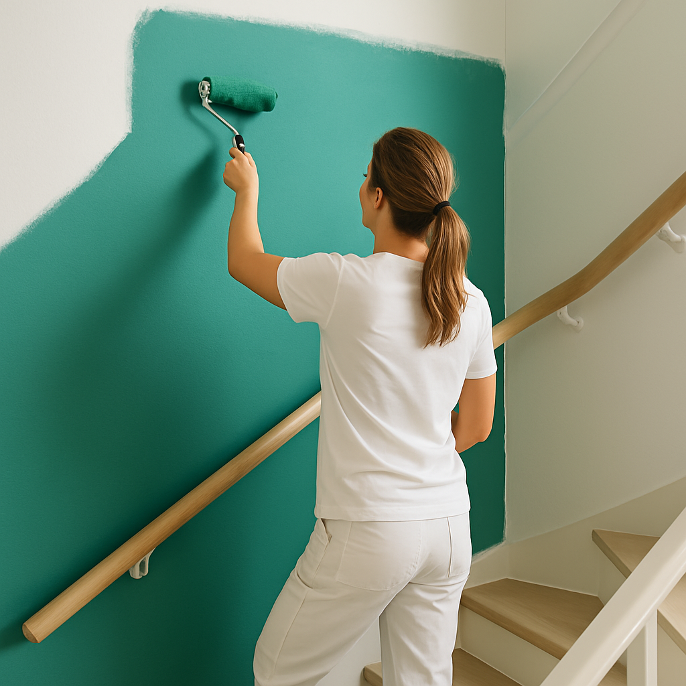
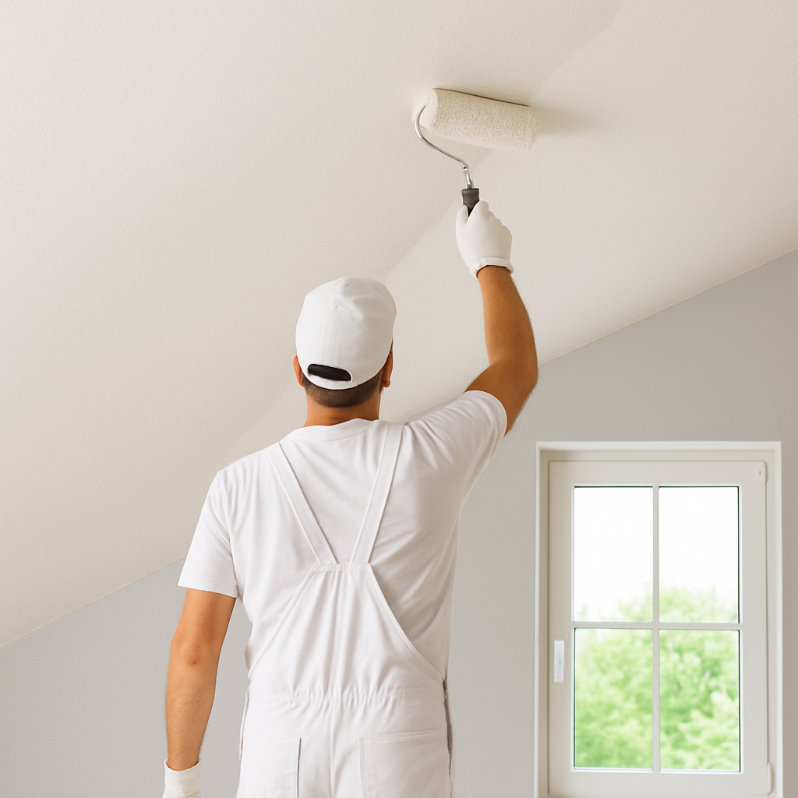
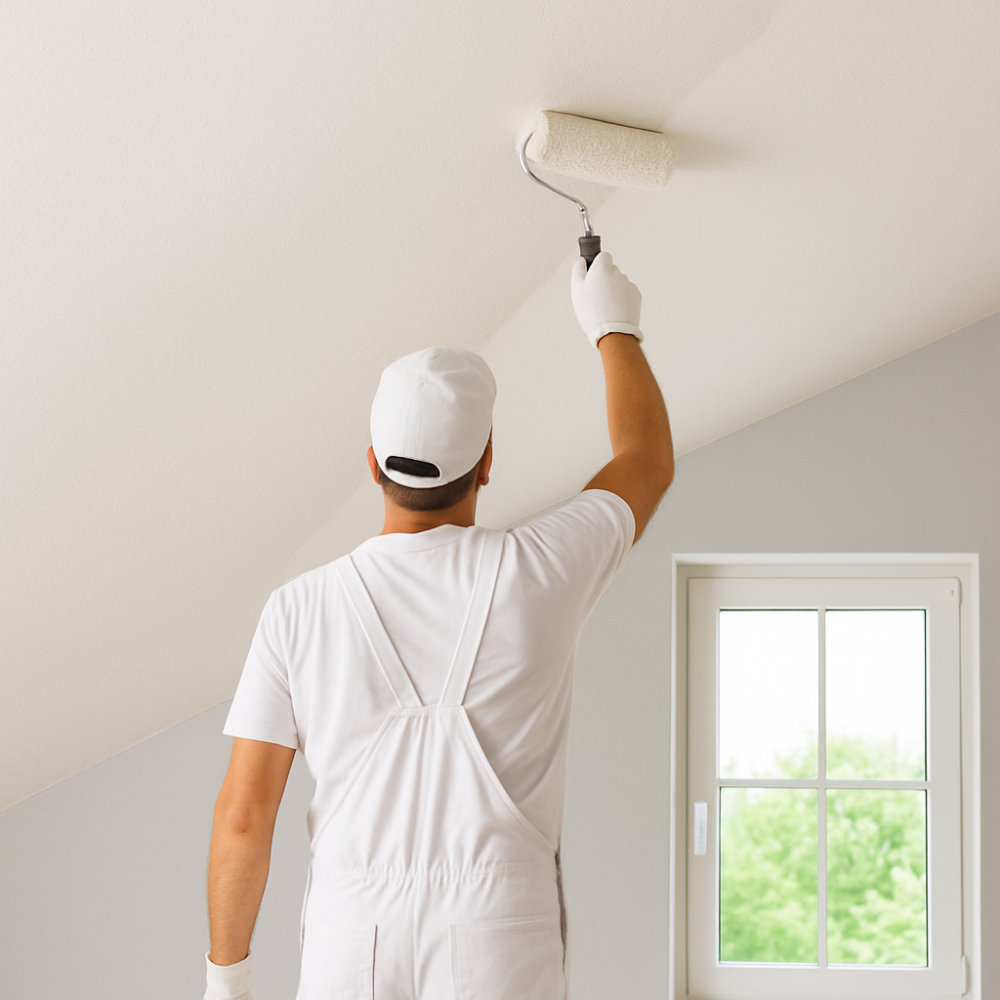

Vi erbjuder väggmålning i Stockholm med snabb service och konkurrenskraftiga priser. Oavsett om du vill fräscha upp hemmet, följa nya trender eller höja värdet inför en försäljning tar vi hand om hela processen – från noggrant förarbete och val av rätt färg till ett snyggt slutresultat. Våra målare arbetar effektivt och professionellt vilket gör att du slipper tidskrävande eget arbete och istället får ett hållbart och välmålat resultat.
Priset på väggmålning i Stockholm kan variera en hel del beroende på väggens skick, hur omfattande förarbetet är och vilken typ av färg som används. Som riktmärke ligger timkostnaden vanligtvis någonstans mellan 300 och 600 kronor. Kontakta oss gärna för rådgivning och en kostnadsfri offert.
Våra Tjänster
Vi hjälper privatpersoner, bostadsrättsföreningar och företag med allt från mindre rum till hela fastigheter.
Vi är en Stockholmsbaserad målerifirma som erbjuder ett brett utbud av tjänster i hela regionen – från tapetsering till fönstermålning och grundarbete. Med vår långa erfarenhet och noggranna arbetsmetoder levererar vi resultat du kan känna dig trygg med. Våra skickliga målare säkerställer alltid hög kvalitet och vi arbetar med ett stort fokus på kundnöjdhet. Därför erbjuder vi också en nöjd-kund-garanti på våra uppdrag.
Vi lämnar gärna offert på det du behöver hjälp med och guidar dig genom hela processen – från planering till färdigt resultat. Söker du målare i Stockholm? Kontakta oss på 08-123 45 678 eller via vårt kontaktformulär, så hjälper vi dig.
Att måla om fasaden är viktigt för att skydda huset mot väder och vind samt för att bevara eller öka fastighetens värde. Vi erbjuder professionell fasadmålning i Stockholm med fokus på noggrant förarbete, rätt färgval och ett hållbart slutresultat – oavsett om det gäller trä- eller putsfasad. Våra erfarna målare arbetar effektivt och med hög kvalitet, så att du får en trygg och smidig process från start till mål. Priset för fasadmålning varierar beroende på fastighetens storlek, men generellt kan du räkna med cirka 75–250 kronor per kvadratmeter efter ROT-avdrag. Kontakta oss gärna för rådgivning och en kostnadsfri offert.
Att måla om taket kan ge hela rummet ett fräscht och ljust intryck, men det kräver både rätt teknik och förberedelse för att få ett jämnt och hållbart resultat. Vi erbjuder professionell takmålning i Stockholm och tar hand om hela processen – från rengöring och spackling till val av färg och noggrant utförande. Våra erfarna målare ser till att färgen fäster ordentligt och håller i många år framöver. Priset varierar beroende på yta och förarbete, men för ett tak på cirka 30 m² ligger kostnaden vanligtvis runt 6 500 kronor efter ROT-avdrag. Kontakta oss gärna för en kostnadsfri offert och rådgivning.
Att måla om trapphuset ger hela fastigheten ett lyft och skapar ett välkomnande första intryck för både boende och besökare. Vi erbjuder professionell trapphusmålning i Stockholm och anpassar färgsättning, teknik och material efter byggnadens stil – oavsett om det gäller ett modernt hus eller ett äldre trapphus med klassiska detaljer. Våra erfarna målare tar hand om hela processen från planering till färdigt resultat, så att du kan känna dig trygg och nöjd. Priset för trapphusmålning ligger vanligtvis mellan 400 och 700 kronor i timmen, beroende på omfattning och förarbete. Kontakta oss gärna för rådgivning och en kostnadsfri offert.
Tapetsering är ett enkelt sätt att ge rummet nytt liv, men för att få ett jämnt och hållbart resultat krävs noggrant förarbete och rätt teknik. Vi erbjuder professionell tapetsering i Stockholm och hjälper dig med allt från förberedelser till val av tapet och montering, oavsett om det gäller en fondvägg eller hela rummet. Våra erfarna tapetserare ser till att arbetet utförs snabbt och snyggt, så att du slipper bubblor, skarvar och ojämnheter. Priset för tapetsering ligger vanligtvis mellan 300 och 600 kronor i timmen, beroende på omfattning och materialval. Kontakta oss gärna för en kostnadsfri offert och rådgivning.


